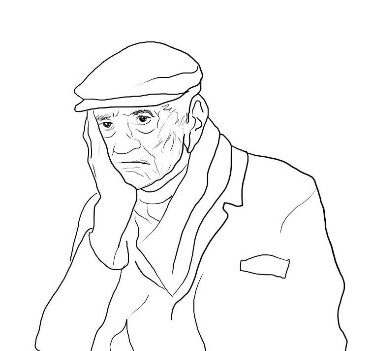

|

|
La gripe española también le provocó a algunas personas una psicosis que podía llevar a asesinatos y suicidios. Los informes periodísticos detallan algunas de estas muertes, que los tribunales atribuyeron al "delirio durante la influenza".
Un hombre que estaba en la Fuerza Aérea Real en Blandford Camp en Dorset escribió: "Un bosque pequeño cerca del campamento se apodó 'el bosque de los suicidios' debido a la cantidad de hombres que tenían gripe y se suicidaban allí".
"La gripe parecía dejar a las personas con la mente perturbada", relató.
Un panadero de Norfolk golpeó a su esposa y dos hijos hasta la muerte antes de ahorcarse, según informó el Hartlepool Northern Daily Mail el 6 de noviembre de 1918.
"Sitch fue atacado por la enfermedad la semana pasada y se obligó a toda la familia a permanecer en sus camas", relató el periódico.
"Ayer por la mañana un vecino descubrió el cadáver de Sitch colgando de una soga en el dormitorio y luego encontraron a su esposa e hijos muertos a golpes en otra habitación".
|